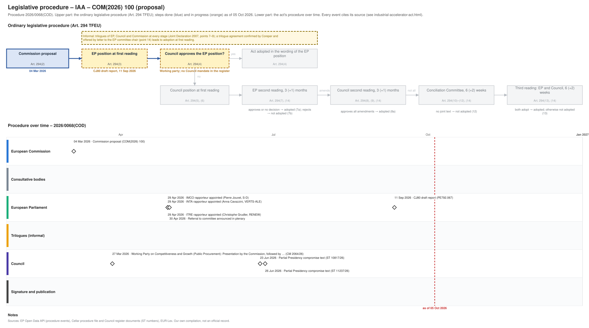

← Regulation timeline › IAA › Legislative procedure · All procedures
Procedure 2026/0068(COD), ongoing, as of 06 Oct 2026. Drawing: SVG · PNG · PDF (A3) · draw.io · Page as Markdown: industrial-accelerator-act.md
| Stage | EP committee stage |
|---|---|
| Parliament | draft report 11 Sep 2026 |
| Council | working party, latest document 30 Sep 2026 |
| Latest activity | 05 Oct 2026 · European Parliament: Committee opinion adopted |
| Next steps | 14 Dec 2026: Indicative plenary sitting date, 1st reading (EP forecast); EP: amendments and committee vote on the report and mandate; Council: working party towards a negotiating mandate |

| Committee | Role | Rapporteur | Shadow rapporteurs |
|---|---|---|---|
| IMCO Internal Market and Consumer Protection | Responsible (joint committee, Rule 59) | Pierre Jouvet (S&D), appointed 29 Apr 2026 | Tomislav Sokol (EPP), Klara Dostalova (PfE), Mariateresa Vivaldini (ECR), Nikola Minchev (Renew), David Cormand (Greens/EFA), Hanna Gedin (The Left) |
| INTA International Trade | Responsible (joint committee, Rule 59) | Anna Cavazzini (Greens/EFA), appointed 29 Apr 2026 | Dirk Gotink (EPP), Kathleen Van Brempt (S&D), Isabella Tovaglieri (PfE), Daniele Polato (ECR), Bart Groothuis (Renew), Rudi Kennes (The Left) |
| ITRE Industry, Research and Energy | Responsible (joint committee, Rule 59) | Christophe Grudler (Renew), appointed 29 Apr 2026 | Raúl De La Hoz Quintano (EPP), Jens Geier (S&D), Paolo Borchia (PfE), Daniel Obajtek (ECR), Sara Matthieu (Greens/EFA), Marina Mesure (The Left), Marcin Sypniewski (ESN) |
| ENVI Environment, Climate and Food Safety | Opinion | Mathilde Androuët (PfE), appointed 26 May 2026 | Radan Kanev (EPP), Christophe Clergeau (S&D), Stefano Cavedagna (ECR), Grégory Allione (Renew), Rasmus Nordqvist (Greens/EFA), Per Clausen (The Left), Anja Arndt (ESN) |
| BUDG Budgets | Budgetary assessment: decided not to give an opinion | – | – |
Source: EP Open Data API (participations) and the Legislative Observatory (joint committee, opinions declined); names link to each Member's page on the EP website. The API names no committee for shadow rapporteurs; they are assigned by the EP's order of participants, which groups each committee.
| Date | Actor | Event | Document | Source |
|---|---|---|---|---|
| 2026-03-04 | European Commission | Commission proposal (Art. 294(2) TFEU) | COM(2026) 100 · en.md de.md | Cellar (CELEX 52026PC0100) |
| 2026-03-27 | Council | Working Party on Competitiveness and Growth (Public Procurement): Presentation by the Commission, followed by … | CM 2064/26 | Council register, CM 2064/26 (notice of meeting and provisional agenda) |
| 2026-04-29 | European Parliament | IMCO rapporteur appointed (Pierre Jouvet, S-D) | EP procedure file | EP Open Data API, procedure 2026-0068 (participation RAPPORTEUR) |
| 2026-04-29 | European Parliament | INTA rapporteur appointed (Anna Cavazzini, VERTS-ALE) | EP procedure file | EP Open Data API, procedure 2026-0068 (participation RAPPORTEUR) |
| 2026-04-29 | European Parliament | ITRE rapporteur appointed (Christophe Grudler, RENEW) | EP procedure file | EP Open Data API, procedure 2026-0068 (participation RAPPORTEUR) |
| 2026-04-30 | European Parliament | Referral to committee announced in plenary | EP procedure file | EP Open Data API, procedure 2026-0068 (REFERRAL) |
| 2026-06-23 | Council | Partial Presidency compromise text | ST 10817/26 · en.md | Cellar procedure file 2026/68 (Council register) |
| 2026-06-26 | Council | Partial Presidency compromise text | ST 11237/26 · en.md | Cellar procedure file 2026/68 (Council register) |
| 2026-09-11 | European Parliament | CJ80 draft report | PE792.067 · en.md de.md | EP Open Data API, procedure 2026-0068 (COMMITTEE_TABLING_REPORT) |
| 2026-10-05 | European Parliament | Committee opinion adopted | EP procedure file | EP Open Data API, procedure 2026-0068 (COMMITTEE_ADOPTING_OPINION) |
Every document the Council register, the EU database of the Parliament of Austria or the EP lists for the procedure, with its state: public documents link to the official file; documents that are not public link to their entry in the Austrian database where there is one (metadata only). Status: public; not public; not public, leak available (an unofficial copy is known to circulate outside the institutions; it is neither published nor quoted here). Released: when a document listed as not public was released, by the date of the Council's public PDF (a technical date) or else the day our daily check found it public.
| Date | Document | Kind | Subject | Status | Released | Text |
|---|---|---|---|---|---|---|
| 2026-03-05 | ST 7009/26 | council-transmission | Proposal for a REGULATION OF THE EUROPEAN PARLIAMENT AND OF THE COUNCIL establishing a framework of measures for the acceleration of industrial capacity and … | public | – | – |
| 2026-03-05 | ST 7009/26 ADD 1 | council-transmission | ANNEX to the Proposal for a REGULATION OF THE EUROPEAN PARLIAMENT AND OF THE COUNCIL establishing a framework of measures for the acceleration of industrial … | public | – | – |
| 2026-03-05 | ST 7009/26 ADD 2 | council-transmission | REGULATORY SCRUTINY BOARD OPINION Impact Assessment accompanying the proposal for an Industrial Accelerator Act | public | – | – |
| 2026-03-05 | ST 7009/26 ADD 3 | council-transmission | COMMISSION STAFF WORKING DOCUMENT Subsidiarity Grid Accompanying the document Proposal for a REGULATION OF THE EUROPEAN PARLIAMENT AND OF THE COUNCIL … | public | – | – |
| 2026-03-05 | ST 7009/26 ADD 4 | council-transmission | COMMISSION STAFF WORKING DOCUMENT IMPACT ASSESSMENT REPORT Accompanying the document Proposal for a REGULATION OF THE EUROPEAN PARLIAMENT AND OF THE COUNCIL … | public | – | – |
| 2026-03-05 | ST 7009/26 ADD 5 | council-transmission | COMMISSION STAFF WORKING DOCUMENT EXECUTIVE SUMMARY OF THE IMPACT ASSESSMENT Accompanying the document Proposal for a REGULATION OF THE EUROPEAN PARLIAMENT AND … | public | – | – |
| 2026-03-11 | WK 3834/26 | council-note | Presidency flash note for the meeting of the Working Party on Competitiveness and Growth (Industry) on 16 March 2026 | public | – | – |
| 2026-03-16 | WK 4090/26 | council-note | Presentation by the European Commission : Proposal for a Regulation for Industrial Accelerator Act (agenda item 2) Working Party on Competitiveness and Growth … | public | – | – |
| 2026-03-16 | WK 4123/26 | council-note | Presentation by the European Commission : Proposal for a Regulation for Industrial Accelerator Act - Impact Assessment (agenda item 3) Working Party on … | public | – | – |
| 2026-03-20 | WK 4418/26 | council-note | Regulation for Industrial Accelerator Act: - General comments and questions by : AT, BE, CZ, DE, DK, EE, ES, FI, FR, HU, IE, LT, MT, NL, PL, SE, SI | public | – | – |
| 2026-03-24 | WK 4405/26 | council-note | Presentation by the European Commission : Proposal for a REGULATION OF THE EUROPEAN PARLIAMENT AND OF THE COUNCIL establishing a framework of measures for the … | public | – | – |
| 2026-03-30 | WK 4861/26 | council-note | Presidency flash note for the meeting of the Working Party on Competitiveness and Growth (Industry) on 16 April 2026 | public | – | – |
| 2026-04-24 | WK 5907/26 | council-note | Presidency flash note for the meeting of the Working Party on Competitiveness and Growth (Industry) on 27 and 28 April 2026 | public | – | – |
| 2026-04-28 | WK 5952/26 | council-note | Proposal for a Regulation of the European Parliament and of the Council establishing a framework of measures for the acceleration of industrial capacity and … | public | – | – |
| 2026-04-28 | WK 6035/26 | council-note | Proposal for a Regulation of the European Parliament and of the Council establishing a framework of measures for the acceleration of industrial capacity and … | not public* | – | – |
| 2026-04-30 | ST 8704/26 | council-note | Optional consultation of the Committee of the Regions | public | – | – |
| 2026-05-07 | WK 6472/26 | council-note | Presidency Flash note for the meeting of the Working Party on Competitiveness and Growth (Industry) on 11 May 2026 | not public* | – | – |
| 2026-05-08 | ST 8925/26 | council-note | Preparation of the Competitiveness Council (Internal Market, Industry, Research and Space) on 28 May 2026 Industrial Accelerator Act: how best to leverage … | not public* | – | – |
| 2026-05-08 | ST 9116/26 | council-note | Preparation of the Competitiveness Council (Internal Market, Industry, Research and Space) on 28 May 2026 Industrial Accelerator Act: how best to leverage … | public | – | – |
| 2026-05-11 | WK 6600/26 | council-note | Proposal for a Regulation of the European Parliament and of the Council establishing a framework of measures for the acceleration of industrial capacity and … | not public* | – | – |
| 2026-05-11 | WK 6637/26 | council-note | Presentations by the European Commission : New European Bauhaus: from vision to implementation (agenda item 2) Working Party on Competitiveness and Growth … | public | – | – |
| 2026-05-11 | WK 6649/26 | council-note | Correlation table | public | – | – |
| 2026-05-13 | ST 9116/26 REV 1 | council-note | Preparation of the Competitiveness Council (Internal Market, Industry, Research and Space) on 28 May 2026 Industrial Accelerator Act: how best to leverage … | public | – | – |
| 2026-05-13 | WK 6719/26 | council-note | Presidency Flash note for the meeting of the Working Party on Competitiveness and Growth (Industry) on 18 May 2026 | not public* | – | – |
| 2026-05-19 | WK 6792/26 | council-note | Presidency Flash note for the meeting of the Working Party on Competitiveness and Growth (Industry) on 21 May 2026 | not public* | – | – |
| 2026-05-19 | WK 6968/26 | council-note | Regulation for Industrial Accelerator Act - European Commission replies to MS questions : Chapters I, II | public | – | – |
| 2026-05-19 | WK 6969/26 | council-note | Regulation for Industrial Accelerator Act - European Commission replies to MS questions : Chapter V | public | – | – |
| 2026-05-19 | WK 6970/26 | council-note | Regulation for Industrial Accelerator Act - Technical note on permitting provisions in relevant European legislations | public | – | – |
| 2026-05-22 | ST 9634/26 | council-note | Opinion on the application of the Principles of Subsidiarity and Proportionality - Cover note from the Chamber of Deputies of the Czech Republic | not public* | – | – |
| 2026-05-27 | WK 7481/26 | council-note | Presidency flash note for the meeting of the Working Party on Competitiveness and Growth (Industry) on 1 June 2026 | not public* | – | – |
| 2026-06-01 | WK 7745/26 | council-note | Regulation for Industrial Accelerator Act - European Commission replies to MS questions : Chapter IV | public | – | – |
| 2026-06-02 | ST 9976/26 | council-note | Opinion on the application of the Principles of Subsidiarity and Proportionality - Cover note from the Senate of the Czech Republic | not public* | – | – |
| 2026-06-02 | ST 9981/26 | council-note | Opinion on the application of the Principles of Subsidiarity and Proportionality - Cover note from the Dutch Senate | not public* | – | – |
| 2026-06-09 | WK 8155/26 | council-note | Presidency flash note for the meeting of the Working Party on Competitiveness and Growth (Industry) on 11 June and 12 June 2026 | not public* | – | – |
| 2026-06-10 | WK 8240/26 | council-note | Regulation for Industrial Accelerator Act - European Commission replies to MS questions : Chapter III | public | – | – |
| 2026-06-22 | ST 10916/26 | council-note | Opinion on the application of the Principles of Subsidiarity and Proportionality - 2026/0068 COD - Cover note from the Portuguese Parliament | not public* | – | – |
| 2026-06-22 | ST 10917/26 | council-note | Opinion on the application of the Principles of Subsidiarity and Proportionality - Cover note from the French Senate | not public* | – | – |
| 2026-06-23 | ST 10817/26 | council-compromise | Partial Presidency compromise text | public | – | en |
| 2026-06-23 | WK 7976/26 | council-note | Regulation for Industrial Accelerator Act: - General comments and questions by : AT, BE, CZ, DE, DK, EE, EL, FI, FR, IT, LT, NL, PL, PT, SI, SK | not public* | – | – |
| 2026-06-23 | WK 7976/26 ADD 1 | council-note | Regulation for Industrial Accelerator Act - annexes: - General comments and questions by : AT, CZ, DE, EL, FI, FR, IT, IT, MT, SE, SI | public | – | – |
| 2026-06-26 | ST 11237/26 | council-compromise | Partial Presidency compromise text | public | – | en |
| 2026-06-26 | WK 9384/26 | council-note | Presidency Flash for the meeting of the Working Party on Competitiveness and Growth (Industry) on 29 June 2026 | not public* | – | – |
| 2026-06-26 | WK 9385/26 | council-note | Presidency explanatory note for Chapters I, II, V and VI | not public* | – | – |
| 2026-06-26 | WK 9477/26 | council-note | Regulation for Industrial Accelerator Act: - General comments and questions on Chapter IV by : BE, CZ, DE, DK, EE, EL, FI, FR, IT, LT, LU, MT, NL, PL, PT, SE, … | public | – | – |
| 2026-06-29 | WK 9477/26 COR 1 | council-note | Regulation for Industrial Accelerator Act: - General comments and questions on Chapter IV by : BE, CZ, DE, DK, EE, EL, ES, FI, FR, IT, LT, LU, MT, NL, PL, PT, … | public | – | – |
| 2026-07-01 | WK 9677/26 | council-note | Presidency note : Explanatory note for Block II, for the meeting of the Working Party on Competitiveness and Growth (Industry) on 02 July 2026 | not public* | – | – |
| 2026-07-01 | WK 9678/26 | council-note | Presidency flash note for the meeting of the Working Party on Competitiveness and Growth (Industry) on 02 July 2026 | not public* | – | – |
| 2026-07-02 | ST 11423/26 | council-compromise | Partial Presidency compromise text | not public* | – | – |
| 2026-07-02 | WK 9871/26 | council-note | Regulation for Industrial Accelerator Act: - General comments and questions on Chapter III by : AT, BE, CZ, DE, EE, DE, DK, EL, FI, FR, IT, LT, MT, NL, PL, PT, … | public | – | – |
| 2026-07-02 | WK 9871/26 ADD 1 | council-note | Regulation for Industrial Accelerator Act: - General comments and questions on annexes by : AT, CZ, DE, DK, EL, FI, FR, IT, MT, PL, SE | not public* | – | – |
| 2026-07-03 | WK 9916/26 | council-note | Presidency note : Explanatory note for Chapter III of the Industrial Accelerator Act for the meeting of the Working Party on Competitiveness and Growth … | not public* | – | – |
| 2026-07-03 | WK 9917/26 | council-note | Presidency flash note for the meeting of the Working Party on Competitiveness and Growth (Industry) on 06 July 2026 | not public* | – | – |
| 2026-07-03 | WK 9973/26 | council-compromise | Partial Presidency compromise text on Chapter III of IAA (clean text version of doc ST 11423/2026) | not public* | – | – |
| 2026-07-08 | ST 11374/26 | council-note | Guidance for further work | public | – | – |
| 2026-07-30 | ST 12236/26 | council-compromise | Second Presidency compromise text | not public* | – | – |
| 2026-07-30 | WK 11039/26 | council-note | Consolidated table with comments from these Member States AT, BE, BG, CZ, DE, DK, EE, EL, ES, FI, FR, IT, LT, LU, LV, NL, PL, PT, RO, SE, SI, SK on Chapters I, … | not public* | – | – |
| 2026-07-30 | WK 11040/26 | council-note | Consolidated table with comments from these Member States AT, BE, BG, CZ, DE, DK, EE, EL, ES, FI, FR, IT, LT, LU, NL, PL, RO, SE, SI, SK on Chapter IV of the … | not public* | – | – |
| 2026-07-30 | WK 11041/26 | council-note | Consolidated table with comments from these Member States : AT, BE, CZ, DE, DK, EE, EL, ES, FI, FR, HR, IT, LT, NL, PL, PT, RO, SE, SI, SK on Chapters III of … | not public* | – | – |
| 2026-07-30 | WK 11078/26 | council-compromise | Second Presidency compromise text (compare version of doc ST 12236/26 to the Commission proposal in doc ST 7009/26 + ADD 1) | not public* | – | – |
| 2026-07-30 | WK 11079/26 | council-compromise | Second Presidency compromise text (clean text version of doc ST 12236/2026) | not public* | – | – |
| 2026-07-30 | WK 11080/26 | council-note | Explanatory Note on the Second Presidency compromise text of the Regulation on establishing a framework of measures for accelerating industrial capacity and … | not public* | – | – |
| 2026-07-30 | WK 11081/26 | council-note | Industrial Accelerator Act - Union Origin Options Paper | public | – | – |
| 2026-07-31 | WK 11082/26 | council-note | Presidency flash note for the month of September 2026 | not public* | – | – |
| 2026-08-04 | ST 12329/26 | council-note | Opinion on the application of the Principles of Subsidiarity and Proportionality - Cover note from the Italian Senate | not public* | – | – |
| 2026-08-07 | WK 11199/26 | council-note | Factual Summary of the public feedback received on the Industrial Accelerator Act proposal | not public* | – | – |
| 2026-09-02 | ST 12236/26 REV 1 | council-compromise | Second Presidency compromise text | not public* | – | – |
| 2026-09-03 | WK 13327/26 | council-note | Explanatory Note on the recitals of the Regulation on establishing a framework of measures for accelerating industrial capacity and decarbonisation in … | not public* | – | – |
| 2026-09-03 | WK 13361/26 | council-compromise | Second Presidency compromise text (compare version of doc ST 12236/26 REV1 to the Commission proposal in doc ST 7009/26 + ADD 1) | not public* | – | – |
| 2026-09-03 | WK 13373/26 | council-note | Presidency flash note for the meeting of the Working Party on Competitiveness and Growth (Industry) on 09 and 10 September 2026 | not public* | – | – |
| 2026-09-11 | PE792.067 | ep-draft-report | DRAFT REPORT on the proposal for a regulation of the European Parliament and of the Council establishing a framework of measures for the acceleration of … | public | – | en de |
| 2026-09-11 | WK 13937/26 | council-note | Presidency flash note for the meeting of the Working Party on Competitiveness and Growth (Industry) on 17 September 2026 | not public* | – | – |
| 2026-09-30 | ST 13708/26 | council-note | Regulation on accelerating industrial capacity and decarbonisation (Industrial Accelerator Act) - Guidance for further work | not public* | – | – |
* Not public: the registers are checked again daily until the document is released; last check 2026-10-06.
Unofficial Markdown conversions for reading, searching and project folders; only the official document is authentic. "Read" opens the rendered text on GitHub, where a link to a provision (#art-13, #rec-12, #annex-i) jumps to it.
| Date | Stage | Document | Markdown | Read |
|---|---|---|---|---|
| 2026-03-04 | com-proposal | CELEX 52026PC0100 | en de | GitHub |
| 2026-06-23 | council-compromise | ST 10817/26 | en | GitHub |
| 2026-06-26 | council-compromise | ST 11237/26 | en | GitHub |
| 2026-09-11 | ep-draft-report | PE792.067 | en de | GitHub |